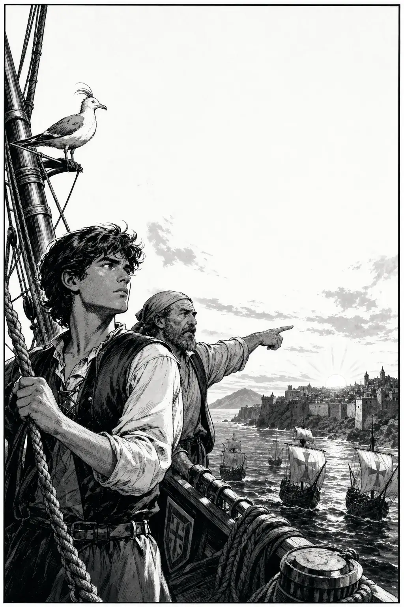
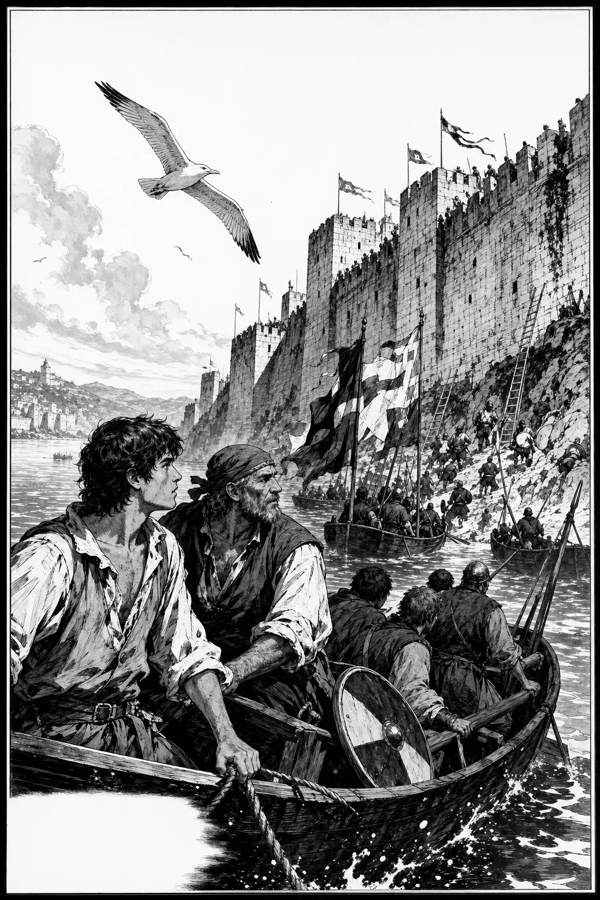
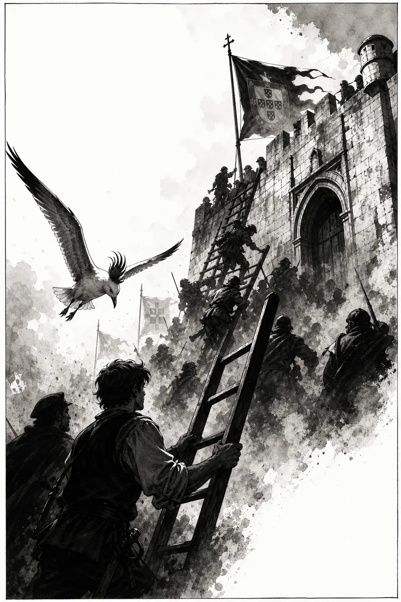
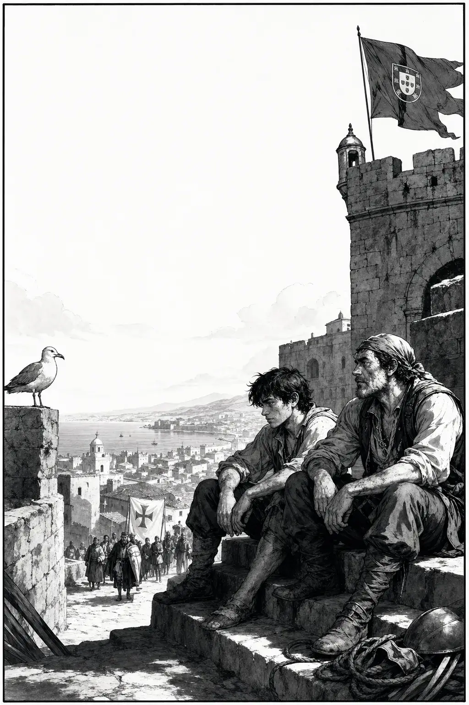
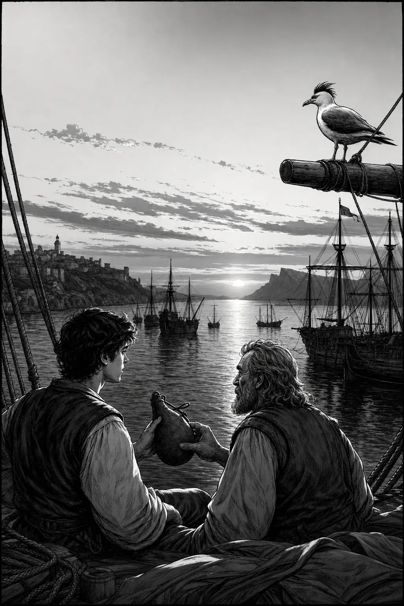

Ceuta · 1/5
Setup

GaivotaO vento muda. A África… já respira perto.
DuarteTomás… aquilo é Ceuta?
TomásÉ. E o nosso reino… vai tentar a porta.
Ceuta · 2/5
Rising action

TomásRemem. Sem olhar para trás.
DuarteAs muralhas são altas…
GaivotaO mar trouxe homens. A pedra espera.
Ceuta · 3/5
Turning point

SoldadoÀ porta! Firmes!
DuarteNão parem!
GaivotaA porta… abriu-se ao reino.
Ceuta · 4/5
Consequence

DuarteEntrámos…
TomásEntrámos. E o mundo… ficou maior.
GaivotaUma cidade. Um começo.
Ceuta · 5/5
Resolution

DuarteAcabou a conquista?
TomásAcabou este dia. O mar… ainda não.
GaivotaGuardo este estreito. Portugal olhou para longe.
Study pack
100 words · PT → EN
Study pack — Ceuta
Read the comic once for story, once for words. Say each line aloud. Prefer Portuguese answers in the quiz.
Glossary (100)
ceutaCeuta
conquistaconquest
descobrimentosDiscoveries (Age of)
infanteprince (Infante)
henriqueHenry
frotafleet
navioship
caravelacaravel
lagosLagos
estreitostrait
áfricaAfrica
fortalezafortress
desembarquelanding ashore
marinheirosailor
mastromast
âncoraanchor
marétide
bússolacompass
rumocourse / heading
travessiasea crossing
tempestadestorm
calmariacalm sea
horizontehorizon
alvoradadawn
cidadelacitadel
mercadomarket
especiariaspice
ourogold
trigowheat
riscorisk
saudadelonging
partidadeparture
chegadaarrival
cruzcross
capelachapel
oraçãoprayer
promessapromise
paifather
filhoson
amigofriend
companheirocompanion
tambordrum
escadaladder
espadasword
elmohelm
vinhowine
barcoboat
remooar
cabocape
costascoast
ilhaisland
continentecontinent
mundoworld
legadolegacy
sonhodream
impérioempire
comérciotrade
rotaroute
oceanoocean
atlânticoAtlantic
mediterrâneoMediterranean
luzlight
murmúriomurmur
farollighthouse
baíabay
penínsulapeninsula
algarveAlgarve
nuvemcloud
estrelastar
luamoon
areiasand
rocharock
valevalley
cinzaash / gray
ferroiron
madeirawood
cordarope
redenet
peixefish
pássarobird
asawing
vooflight
pousarto land / perch
chegarto arrive
rezarto pray
prometerto promise
defenderto defend
atacarto attack
lembrarto remember
esquecerto forget
seguirto follow
nadarto swim
remarto row
navegarto navigate / sail
descobrirto discover
explorarto explore
conquistarto conquer
governarto govern
mandarto order
obedecerto obey
Comprehension (answer in PT)
- Onde e quando acontece a conquista?
- Quem são Duarte e Tomás nesta história?
- O que Tomás pede na aproximação às muralhas?
- O que significa “o mundo ficou maior”?
- Como acaba a história?
Cultural note
Ceuta (1415) is often remembered as an opening chapter of Portugal’s Age of Discoveries. João I’s fleet took a strategic North African port at the Strait of Gibraltar; Infante Henrique was among the princes present. The comic focuses on ordinary sailors — sea, walls, and the feeling that Portugal had begun to look farther than the peninsula.
Next
Free Ep.01: O Terramoto (1755) · Hub: series page · More paid episodes on Gumroad